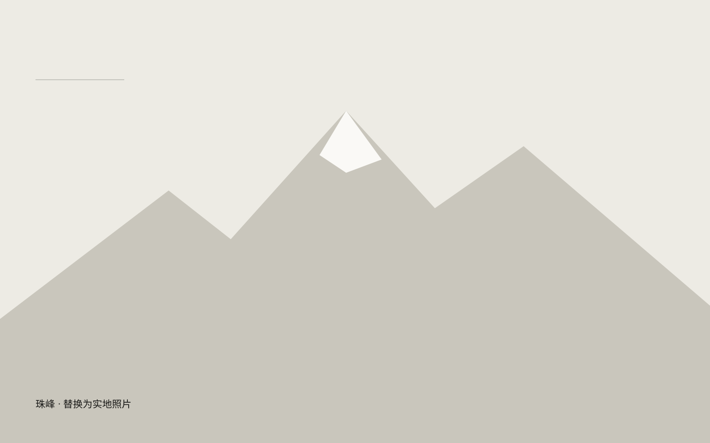

留在这里的一句话
世界很大，人的尺度可以被重新校准。
这段旅程的记录
这里为珠峰留出一页。现在收录的是首页已有的旅行线索；具体时间、行程、实拍照片和完整游记尚未补入。
照片到位后，会在这页形成独立影集。你可以放大观看、切换照片，再回到旅行列表，页面结构不需要重做。
等影像回来，再把故事写完整
- 哪一个具体的场景，让这趟旅行与别处不同？
- 拍下这张照片时，你最想留下的是什么？
- 离开以后，有什么判断或生活习惯改变了？
以上是待填写的游记提纲，不是虚构的旅行经历。
远方 / 阅读与实践
世界很大，人的尺度可以被重新校准。
旅行记录框架 · 真实影像与游记待补充

世界很大，人的尺度可以被重新校准。
这里为珠峰留出一页。现在收录的是首页已有的旅行线索；具体时间、行程、实拍照片和完整游记尚未补入。
照片到位后，会在这页形成独立影集。你可以放大观看、切换照片，再回到旅行列表，页面结构不需要重做。
以上是待填写的游记提纲，不是虚构的旅行经历。